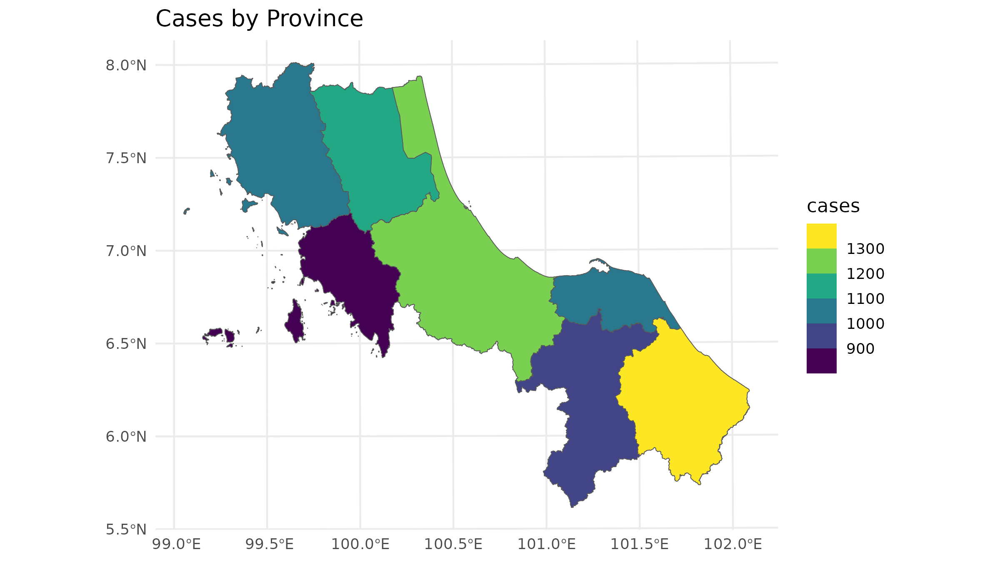
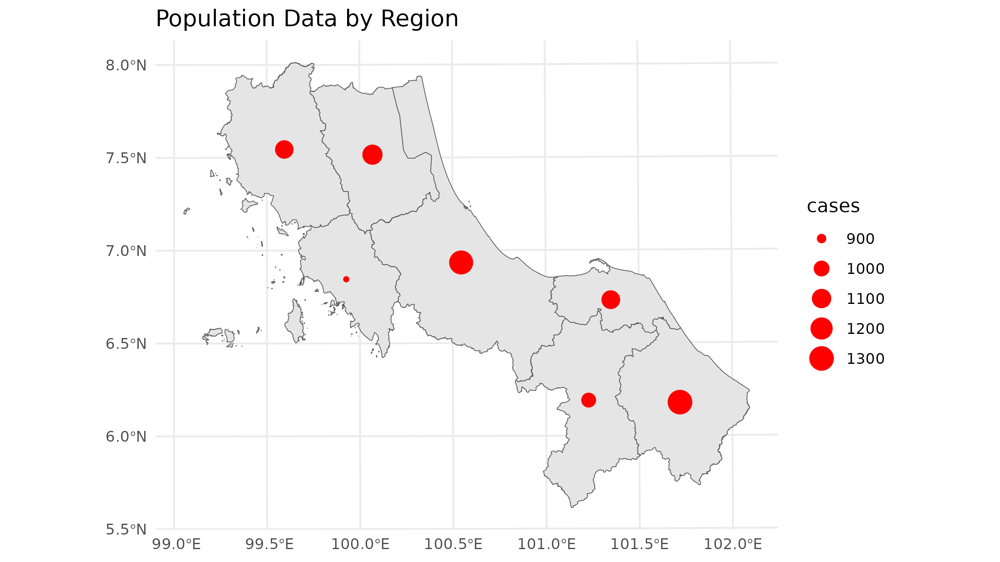
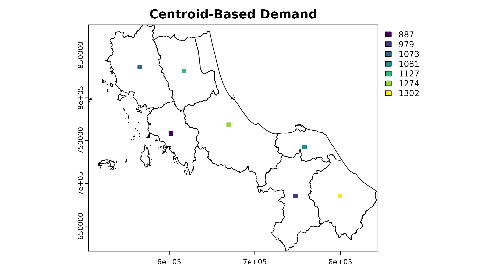
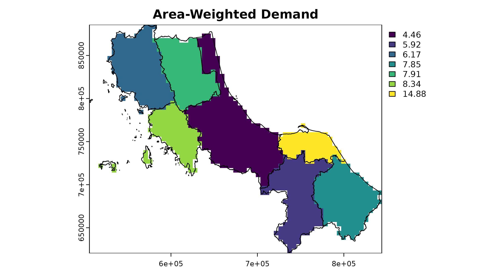
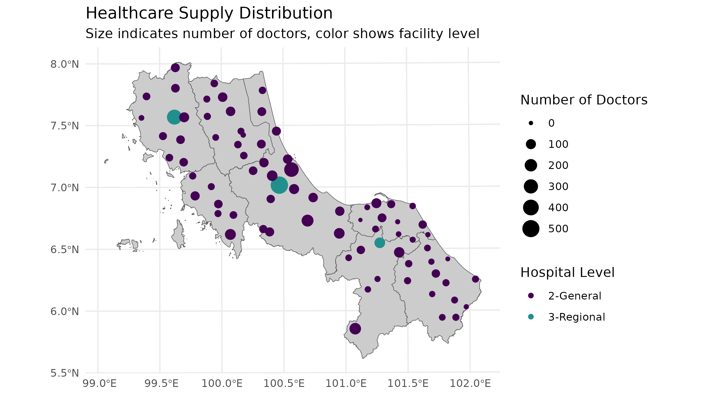
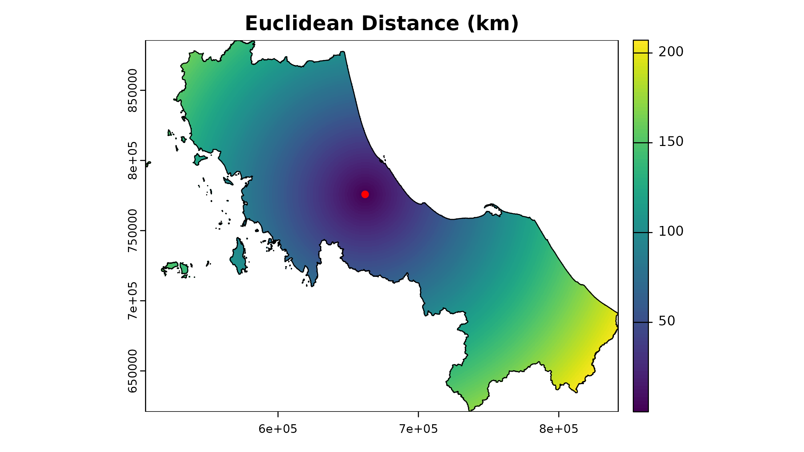
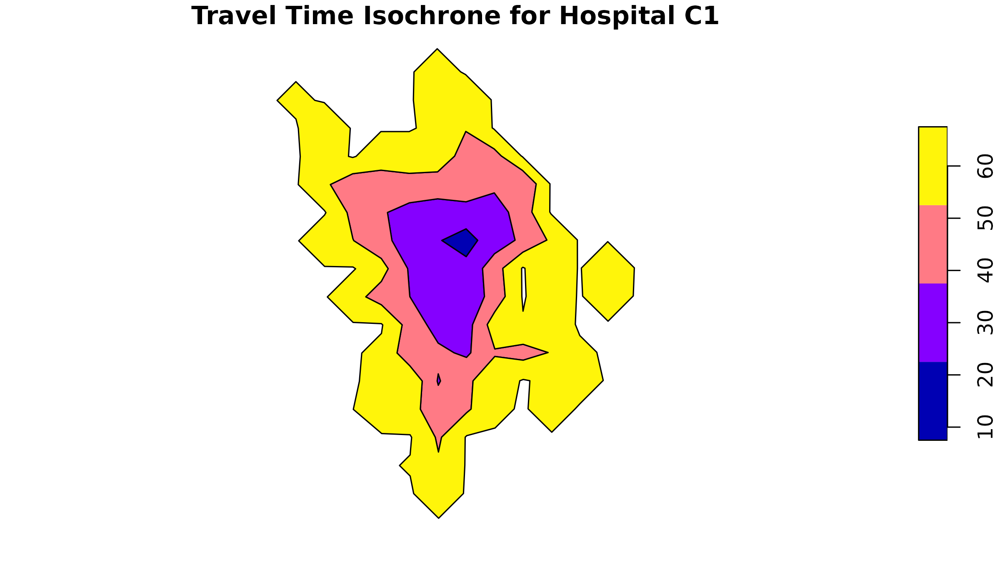
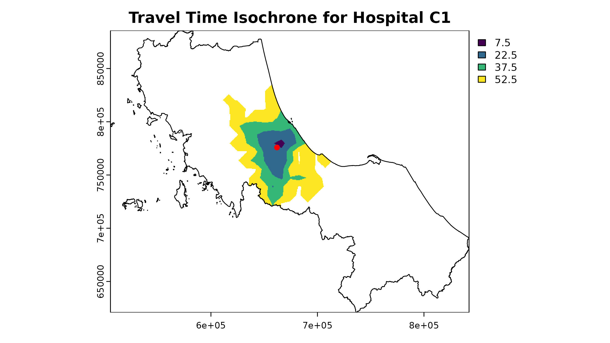
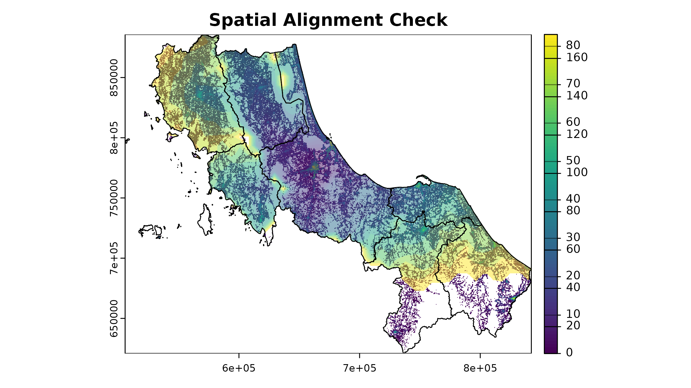
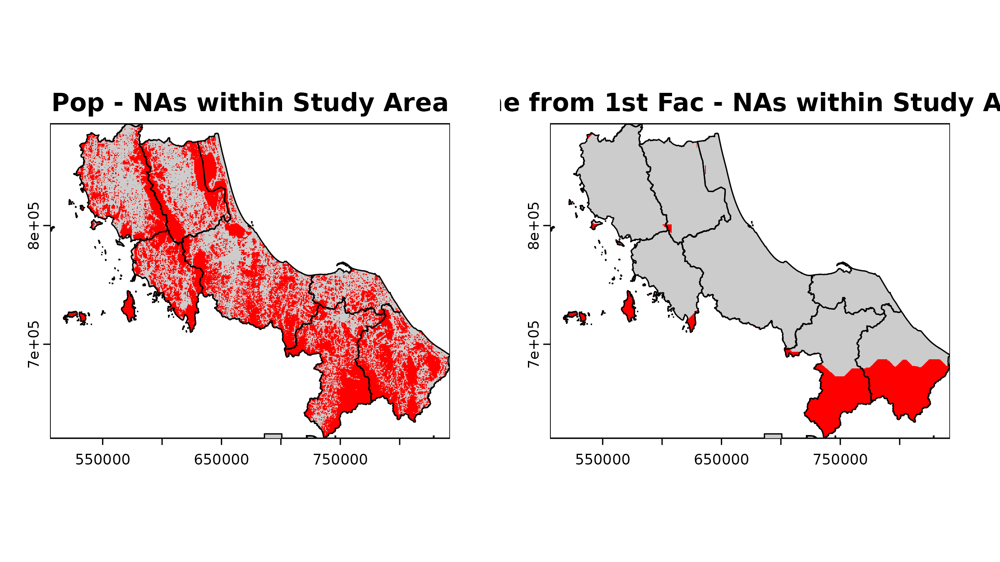

2. Preparing Data for Spatial Accessibility Analysis
Source:vignettes/spax-102-data-prep.Rmd
spax-102-data-prep.Rmd
# Load required packages
library(spax)
library(terra)
library(tidyverse)
#> Error in get(paste0(generic, ".", class), envir = get_method_env()) :
#> object 'type_sum.accel' not found
library(sf)
library(osrm)Data Preparation for Accessibility Analysis
“Give me six hours to chop down a tree, and I will spend the first four sharpening the axe.”
— Abraham Lincoln(?)
Overview
Spatial accessibility analysis requires three key components:
Demand: Population or service need distribution
Supply: Service locations and their capacities
Distance: Travel time or distance between demand and supply
This guide walks through preparing each component for use with
spax.
Dealing with Demand
When preparing demand data for spatial accessibility analysis, we have several approaches available, each with its own assumptions and trade-offs. Let’s explore these methods using a simple example of disease cases by province.
set.seed(42) # For reproducibility
# Example district-level case data
case_data <- tibble(
ADM1_PCODE = bound1$ADM1_PCODE,
cases = round(rnorm(nrow(bound1), 1000, 200)) # Simulated disease cases
)
# Join with spatial data
case_spatial <- bound1 |>
left_join(case_data, by = "ADM1_PCODE")In a vector-based approach, we typically represent each area with a polygon that has an attribute for the number of cases. This often results in choropleth maps, like this:
# Plot the case
ggplot() +
geom_sf(data = bound1) +
geom_sf(data = case_spatial, aes(fill = cases)) +
labs(title = "Cases by Province") +
scale_fill_viridis_b() +
theme_minimal()
But that could sometimes be misleading since in traditional spatial analysis, we often allocate demand to only the centroid of each area:
# Calculate centroids and rasterize
centroids <- st_centroid(case_spatial)
#> Warning: st_centroid assumes attributes are constant over geometries
# Plot the population data
ggplot() +
geom_sf(data = bound1) +
geom_sf(data = centroids, aes(size = cases), col = "red") +
labs(title = "Population Data by Region") +
theme_minimal()
The centroid approach works for vector-centric analysis, but for
spax, we need to think in terms of continuous surfaces.
Let’s explore different ways to convert our data
1. Centroid-Based Approach
The simplest approach treats all demand as concentrated at area centroids. This mirrors traditional vector-based accessibility analyses but in raster format:
# Create template raster - Coarser resolution for example
template <- aggregate(rast(u5pd), fact = 10)
# Rasterize centroids
centroid_demand <- terra::rasterize(
vect(centroids),
template,
field = "cases",
fun = "sum"
)
As you can see, this approach creates a somewhat odd-looking result - all our demand is concentrated in single cells. However, this raster can still be used in accessibility analysis, just like the original population density raster. The key trade-off here is between simplicity and spatial accuracy.
2. Area-Weighted Approach [developing]
A more sophisticated method distributes cases evenly across each province’s area:
# 1. Calculate case density
case_spatial <- case_spatial |>
mutate(
area_m2 = st_area(case_spatial), # estimate area
case_density = as.numeric(cases / area_m2) # calc density
)
# 2. Rasterize case density
case_density_raster <- terra::rasterize(
vect(case_spatial),
template,
field = "case_density"
)
# 3. Calculate pixel area in square kilometers
pixel_area <- terra::res(template)[1] * terra::res(template)[2]
# 4. Convert density to absolute cases per pixel
case_raster <- case_density_raster * pixel_areaLet’s see how this looks:

This gives us a more continuous surface, but we should validate that our totals still match:
# Extract raster values for each polygon
extracted_cases <- terra::extract(
case_raster,
vect(case_spatial),
fun = sum, na.rm = TRUE
)
# Compare original vs rasterized totals
case_spatial |>
st_drop_geometry() |>
select(ADM1_PCODE, cases) |>
mutate(
raster_cases = extracted_cases[, 2],
difference = abs(cases - raster_cases),
pct_diff = (difference / cases) * 100
) |>
mutate_if(is.numeric, round, 1)
#> ADM1_PCODE cases raster_cases difference pct_diff
#> 1 TH90 1274 1261.4 12.6 1.0
#> 2 TH91 887 867.4 19.6 2.2
#> 3 TH92 1073 1068.1 4.9 0.5
#> 4 TH93 1127 1131.1 4.1 0.4
#> 5 TH94 1081 1085.9 4.9 0.5
#> 6 TH95 979 995.2 16.2 1.7
#> 7 TH96 1302 1286.8 15.2 1.2The differences between original and rasterized values arise from the discretization process. The results get closer as resolution increases, but there’s always a trade-off between accuracy and computational efficiency.
3. Informed Distribution [developing]
Even more realistic distribution is possible using auxiliary data like population density to inform where cases are likely to occur within each province. This section will be expanded in future versions.
4. Probabilistic Sampling [developing]
For uncertainty analysis, spax provides tools to
generate multiple potential demand distributions:
# This advanced approach is covered in detail in the
# "Probabilistic Accessibility Analysis" vignette
?sample_pmf # See documentation for detailsThe choice of demand preparation method can significantly impact your accessibility analysis results. Consider your specific context:
- Data availability (Do you have population density data?)
- Scale of analysis (Are districts large enough that distribution matters?)
- Purpose (Is point-based analysis sufficient for your needs?)
- Computational resources (Can you handle higher resolution distributions?)
Processing Supply Data
Supply data is usually the most straightforward component - we typically know exactly where facilities are and their capacities. However, these locations play a crucial role in the more complex task of distance calculation that follows..
# Basic Supply Structure
head(hc12_hos) |>
select(id, hoslvl, s_doc, s_nurse)
#> Simple feature collection with 6 features and 4 fields
#> Geometry type: POINT
#> Dimension: XY
#> Bounding box: xmin: 659422 ymin: 744135 xmax: 715990.7 ymax: 824148
#> Projected CRS: WGS 84 / UTM zone 47N
#> # A tibble: 6 × 5
#> id hoslvl s_doc s_nurse geometry
#> <chr> <fct> <int> <int> <POINT [m]>
#> 1 c172 3-Regional 522 973 (662036.1 775836.7)
#> 2 c173 2-General 321 706 (672852 789753.3)
#> 3 c174 2-General 67 63 (659422 824148)
#> 4 c175 2-General 81 103 (692195 764766)
#> 5 c176 2-General 175 180 (687203.3 744135)
#> 6 c177 2-General 77 103 (715990.7 752559.6)For use in spax, supply data should be separated
into:
- Spatial locations (for distance calculations)
- Capacity attributes (for accessibility computations)
# Separate spatial and attribute components
supply_attributes <- hc12_hos |>
st_drop_geometry() |>
select(id, s_doc, s_nurse) # Keep only relevant columns
# Visual check of supply distribution
ggplot() +
geom_sf(data = bound1, fill = "grey80") +
geom_sf(data = hc12_hos, aes(size = s_doc, color = hoslvl)) +
scale_size_continuous(name = "Number of Doctors") +
scale_color_viridis_d(name = "Hospital Level", end = 0.5) +
theme_minimal() +
labs(
title = "Healthcare Supply Distribution",
subtitle = "Size indicates number of doctors, color shows facility level"
)
Creating Distance/Travel Time Surfaces
While supply locations themselves are straightforward, calculating distances between supply and demand points is often the most complex part of data preparation. Although it’s theoretically possible to calculate distances from either supply to demand or demand to supply (assuming travel times are symmetric), there are practical reasons why we typically calculate from supply points:
- We usually have fewer supply points than demand points, making computation more efficient
- When redistributing accessibility scores back to the population, we need supply-based distances anyway
Let’s explore different approaches to creating these distance surfaces:
1. Euclidean Distance
The simplest approach - straight-line distances:
# Example for one facility using terra
facility_point <- hc12_hos[1, ]
template_rast <- rast(u5pd) # Use population raster as template
# Calculate Euclidean distance (in meters since our CRS is projected)
euclidean_dist <- terra::distance(
template_rast,
vect(facility_point)
) |> crop(vect(bound0), mask = TRUE)
#> |---------|---------|---------|---------|=========================================
# Plot the Euclidean distance
plot(euclidean_dist / 1000, # Convert to kilometers
main = "Euclidean Distance (km)"
)
plot(vect(facility_point), add = TRUE, col = "red", pch = 16)
plot(vect(bound0), add = TRUE)
While simple, this approach ignores real-world travel constraints like roads and barriers. It’s most useful for:
Initial exploratory analysis
Areas with relatively uniform transportation networks
Services that aren’t strictly road-dependent
2. Travel Time Isochrones
A more realistic approach uses travel time isochrones - areas
reachable within specific time thresholds. While spax
doesn’t generate isochrones directly, we can use tools like the osrm package:
# Example: Calculate isochrones for the first hospital
# Since our data is in a planar projection, we need to transform it to WGS84 (EPSG:4326) for routing services
example_hos1 <- hc12_hos[1, ] |> # Select the first hospital
st_transform(4326) |> # Transform to WGS84 (geodesic projection)
st_coordinates() |> # Extract coordinates
as.numeric() # Convert to numeric
# Calculate isochrones
example_isochrone <- osrmIsochrone(
loc = example_hos1, # Example coordinates
breaks = c(15, 30, 45, 60), # 15-minute intervals
res = 30
)
# Transform back to our working CRS
example_isochrone <- st_transform(example_isochrone, st_crs(bound0))
# Plot results
par(mfrow = c(1, 2))
plot(example_isochrone[, "isomax"], main = "Travel Time Isochrone for Hospital C1")
plot(example_isochrone[3, "isomax"], main = "Travel Time Isochrone ring for Hospital C1 (45 mins)")The isochrones show travel time “rings” around our facility. If you
take on a vector-based approach, you can use functions like sf::st_contains()
to determine the population within each isochrone ring.
For spax, we need to convert these to a raster
format:
# Prepare isochrones for rasterization
example_isochrone <- example_isochrone |>
mutate(
iso_mean = (isomin + isomax) / 2,
location_id = hc12_hos[1, ]$id
)
# Convert to raster format
example_raster <- terra::rasterize(
x = example_isochrone,
y = template_rast,
field = "iso_mean", # Fill the raster with the isomax values
background = NA,
fun = "sum",
by = "location_id"
) |>
crop(vect(bound0), mask = TRUE)
# Plot
plot(example_raster, main = "Travel Time Isochrone for Hospital C1")
plot(vect(bound0), add = TRUE)
plot(vect(hc12_hos[1, ]), add = TRUE, col = "red", pch = 16)
⚠️ Important Note about OSRM: By default, the
osrm::osrmIsochrone()] function uses OSRM’s demo server. This is fine for testing, but for real analysis you should:
Set up your own OSRM server. This vignette does not cover the server setup process.
Consider rate limits (demo server allows ~1 request/second)
Be mindful of server load and ethical usage
To process all facilities, you’d need to loop through them:
# Example code (not run due to API limitations)
# Initialize a list to store isochrones
isochrones <- list(rep(NA, nrow(hc12_hos)))
# Extract coordinates
hos_coords <- hc12_hos |>
st_transform(4326) |> # only if the data is in planar projection
st_coordinates()
# Loop over each hospital - lapply
isochrones <- lapply(1:nrow(hc12_hos), function(i) {
# Calculate isochrone
osrmIsochrone(
loc = hos_coords[i, ],
breaks = c(15, 30, 45, 60),
res = 30
)
})
# Then proceed to rastarization ...Service Provider Options
When creating travel time surfaces, you have several options:
OSRM (Open Source Routing Machine)
- × Requires server setup for serious use
- × Basic routing without traffic
Commercial APIs (HERE, Google Maps)
× Usage costs
× API limits
Custom cost surfaces (I have no idea how to do this, lol)
× Requires GIS expertise
× More complex to validate
Validating Your Data: Essential Checks Before Analysis
Before running any accessibility analysis, it’s crucial to validate your prepared data. Here’s a systematic approach to validation (some of which already implemented in the package:) :
1. Spatial Alignment
All raster inputs must align perfectly - same extent, resolution, and projection:
# Example:
# You might want to create function to summarize raster properties
summarize_raster <- function(r, name) {
tibble(
Dataset = name,
Resolution = paste(round(res(r), 2), collapse = " x "),
Extent = paste(round(as.vector(ext(r)), 2), collapse = ", "),
CRS = crs(r, proj = TRUE)
)
}
# Compare properties of key rasters
raster_props <- bind_rows(
summarize_raster(rast(u5pd), "Population"),
summarize_raster(rast(hos_iscr), "Travel Time")
)
raster_props
#> # A tibble: 2 × 4
#> Dataset Resolution Extent CRS
#> <chr> <chr> <chr> <chr>
#> 1 Population 520.4 x 520.4 505646.53, 842347.77, 620843.72, 885729.24 +proj=ut…
#> 2 Travel Time 520.4 x 520.4 505646.53, 842347.77, 620843.72, 885729.24 +proj=ut…
# Visual check for alignment
plot(rast(u5pd), main = "Spatial Alignment Check")
plot(rast(hos_iscr)[[1]], add = TRUE, alpha = 0.5)
plot(vect(bound1), add = TRUE)
2. Value Range Validation
Check for reasonable values in your input data:
# Check population density range
summary(u5pd)
#> tha_children_under_five_2020
#> Min. 0.000000e+00
#> 1st Qu. 1.385807e+00
#> Median 3.497750e+00
#> 3rd Qu. 7.571418e+00
#> Max. 8.307421e+01
#> NA's 2.781020e+05
# Check a few travel time rasters
summary(hos_iscr[[1:10]])
#> Warning in .local(object, ...): summary is an estimate based on a sample of 1e+05 cells (30.37% of all cells)
#> c172 c173 c174 c175 c176 c177 c178 c179
#> Min. 6.0 3.0 3.5 4.0 8.5 11.0 5.0 7.5
#> 1st Qu. 67.5 67.5 82.5 67.5 67.5 67.5 67.5 97.5
#> Median 97.5 112.5 127.5 112.5 112.5 112.5 112.5 127.5
#> 3rd Qu. 142.5 142.5 157.5 142.5 142.5 142.5 157.5 157.5
#> Max. 172.5 172.5 172.5 172.5 172.5 172.5 172.5 172.5
#> NA's 232772.0 232555.0 241578.0 226680.0 231076.0 235489.0 241789.0 246926.0
#> c180 c181
#> Min. 5.0 8.5
#> 1st Qu. 97.5 67.5
#> Median 127.5 97.5
#> 3rd Qu. 157.5 127.5
#> Max. 172.5 172.5
#> NA's 247713.0 236889.03. Missing Value Analysis
Understand where and why you have NA values; note that not all NAs are bad:
# Function to analyze NA patterns within boundary
# PS. Will be implemented in the package later
analyze_nas <- function(r, name, bound = bound0) {
# Create mask from boundary
mask <- terra::rasterize(bound, r)
# Count cells only within boundary
cells_in_boundary <- global(!is.na(mask), "sum")$sum
nas_in_boundary <- global(is.na(r) & !is.na(mask), "sum")$sum
cat(
sprintf("%s:\n", name),
sprintf(
" NA cells within boundary: %d (%.1f%% of study area)\n",
nas_in_boundary,
100 * nas_in_boundary / cells_in_boundary
)
)
# Visualize NA pattern
na_map <- (is.na(r) & !is.na(mask)) |> crop(bound, mask = T)
plot(na_map,
main = paste(name, "- NAs within Study Area"),
col = c("grey80", "red"),
legend = FALSE
)
plot(vect(bound1), add = TRUE)
legend("bottomright",
legend = c("Data present", "NA"),
fill = c("grey80", "red"),
bty = "n"
)
}
# Check NA patterns in key datasets
par(mfrow = c(1, 2))
analyze_nas(rast(u5pd), "Pop")
#> Pop:
#> NA cells within boundary: 60551 (54.4% of study area)
analyze_nas(rast(hos_iscr)[[1]], "Time from 1st Fac")
#> Time from 1st Fac:
#> NA cells within boundary: 16841 (15.1% of study area)
Final reminders:
-
Resolution Selection
- Higher resolution ≠ better analysis
- Consider computational resources
- Match resolution to spatial scale of research question
-
Coordinate Reference Systems
- Be consistent with CRS across all datasets
- Document CRS choices and transformations
- Consider distortion implications
-
Documentation
Note data sources and dates
Document all preprocessing steps
Record assumptions made
Note known limitations
Next Steps
With your data prepared, you’re ready to move on to actual accessibility analysis. You can explore the following resources for more information:
- Dissecting spax: Understanding the package’s inner workings [under development]
- Understanding Raster Trade-offs